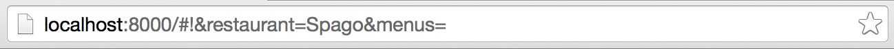
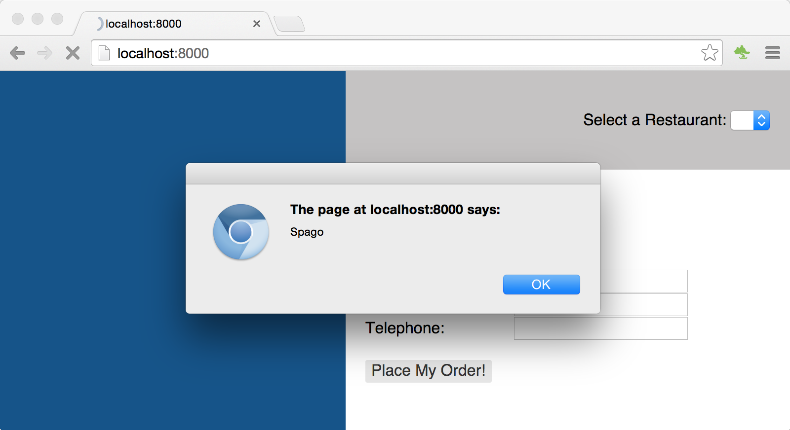
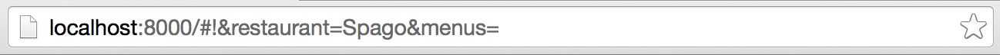
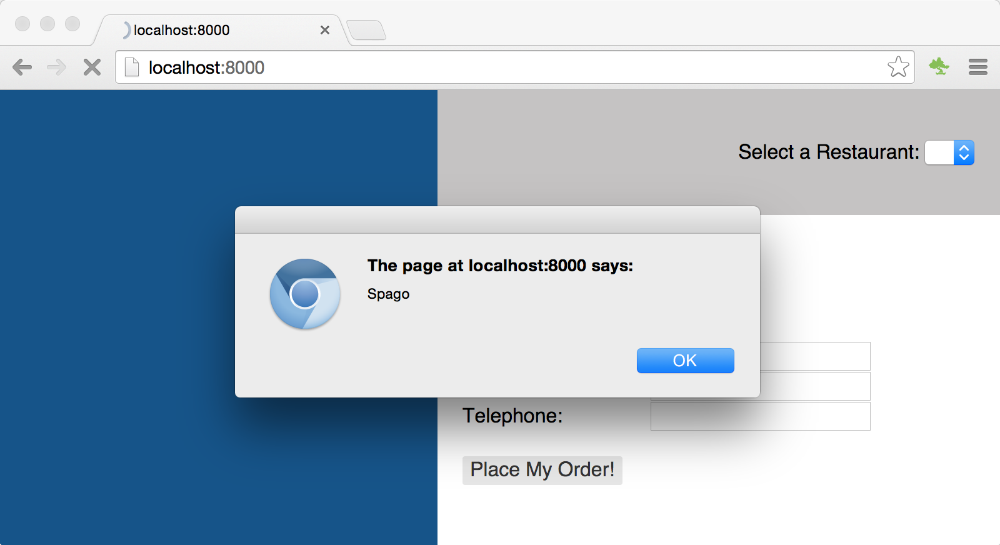
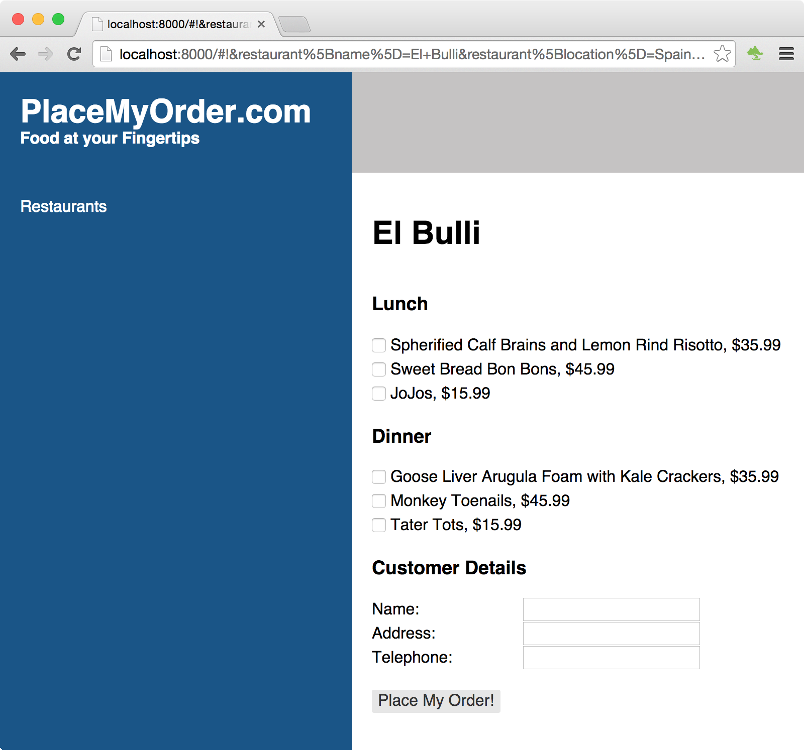

As mentioned in the introduction, CanJS suggests using a global
AppState object to manage the state of your application. The AppState object
is bound to two things:
The application's base template
The application's routing
Since you already know about creating instances of can.Map, creating an
AppState object, which is a can.Map, will be easy. Let's see how this works.
Open up your app.js file, and update it as shown below. Note that the
AppState object is a can.Map—i.e., it is observable. You should also notice
that we're creating our can.Map in a new way—using the define plugin, which
we'll discuss more below:
$(function () {
var AppState = can.Map.extend({
define: {
restaurant: {
value: {}
},
menus: {
value: null
},
confirmation: {
value: {}
}
}
});
var appState = new AppState();
// Bind the application state to the root of the application
$('#can-app').html(can.view('base_template.stache', appState));
can.route.map(appState);
can.route.ready();
});
Routing
Before we dive into the details of the AppState object,
let's quickly discuss routing. Routing in CanJS allows
us to manage browser history and client state by synchronizing the
window.location.hash with a can.Map. In other words, we can use routing to
reflect the state of our application, or set the state of our application. One
of the things that makes routing powerful is that it records the state of the
application in the browser's history. We'll see some specific examples of this
as we proceed.
In our application, we setup routing by:
defining the properties of our AppState object,
binding that object to the route with a call to can.route.map, and
calling can.route.ready(), which sets up two-way binding between the
browser's window.location.hash and the can.route's internal can.Map.
Unless we specify otherwise, which we'll see how to do below, each property
we define on our AppState will map to a potential route. In the
AppState we've defined, we will, by default, have the following
potential routes:
restaurant
menus, and
confirmation
Let's take a moment, now, to see how that works.
Add the following line of code to app.js:
can.route.ready();
//--> Add this line, below the line above:
appState.attr('restaurant', 'Spago');
Now, refresh your app in the browser. The URL bar should look something like
this:

Note that, after we initialized our routes, updating the value of our
AppState's restaurant property caused the route to update as well.
The value of the restaurant and menus properties were serialized and appended
to the window.location.hash.
Let's see what happens if we adjust the value of the hash. To monitor this
change, we'll need to make a slight adjustment to our AppState object. Modify
the restaurant property as follows:
Refresh your app in the browser. The first thing you should notice is that you
get an alert box (or two) with the word "Spago" in it. By adding the set
function above, we're controlling what happens when the AppState's
restaurant property is set. More on that later. Click OK on the alert, go to
the browser's URL bar, change the URL as follows:
Once you submit that URL, you should see an alert box that reads:
Application Binding
It was mentioned earlier that we bound our AppState to the
application's base_template.stache. This is the key to connecting the
AppState to our components. We do that by passing AppState
attributes to the components through their custom HTML tags in
base_template.stache.
Open up base_template.stache and make the following changes:
In the code above, we passed the menus and restaurant attributes to our
Site Menu component, menus and confirmation to the Order Form components,
and the restaurant attribute to the Restaurant List component. These
attributes will automatically be included in the scope of the components.
Below is a diagram detailing how the connections work for connecting the
restaurant property of the AppState to the Restaurant List component:
Let's update our components to communicate with our AppState.
Open up the restaurant_list file and edit it as follows;
Note the showMenu function. From this function we update the restaurant
value that was passed in to the can.Component's custom HTML tag. Additionally,
we've added a define attribute. The define attribute is used to control the
behavior of attributes on a can.Component. We'll go into detail on define in
the next chapter.
Next, open up restaurant_list.stache and link the PlaceOrder button with the
showMenu function we've defined, as follows:
<button can-click="showMenu">
View Order Form
</button>
We've removed the DOM code from our View Model, and are now working directly
with the application. In addition, we added code that would show and hide the content
of the can.Component to our ViewModel. We need to update our view template to reflect these
changes. In the same file (restaurant_list.stache), update the select dropdown
in the template as follows:
What we've done above is to make a connection between the index of the select
dropdown and the index of the restaurants list in the can.Component's scope.
Whenever the currentRestaurantIndex is updated, its set function is called,
which updates the currentRestaurant property.
Now, refresh your application, select a restaurant from the list, then click
the place order button. You should see something like the following:

Next, let's remove the code in app.js that sets the restaurant to "Spago" by default:
//--> Remove this line:
appState.attr('restaurant', 'Spago');
Now that we can see the connection between the component and the AppState,
let's make the code a little more useful. Update your AppState object, as follows:
define: {
restaurant: {
value: {},
set: function (restaurant) {
if (restaurant.restaurantId) {
this.attr('menus', new RestaurantMenusModel.List({id: restaurant.restaurantId}));
this.attr('restaurantName', restaurant.name);
}
return restaurant;
}
},
...
}
This will be a very common pattern in your applications. This setter is our
event handler. Any time a restaurant is selected (i.e., the AppState's
restaurant property is updated), we obtain its menus from our service,
and then update the AppState's menus attribute.
To make the <order-form> component show and the <restaurant-list> component
hide, we use conditional stache tags in base_template.stache, as shown below:
When the AppState's menus attribute has a value, the order form is
displayed. Otherwise, the restaurant list is displayed. To see this in action,
select a restaurant from the list and click the "Place My Order!"
button. You should see something like this:
In this Chapter
Get the code for: chapter 7
As mentioned in the introduction, CanJS suggests using a global AppState object to manage the state of your application. The AppState object is bound to two things:
Since you already know about creating instances of
can.Map, creating an AppState object, which is acan.Map, will be easy. Let's see how this works. Open up yourapp.jsfile, and update it as shown below. Note that the AppState object is acan.Map—i.e., it is observable. You should also notice that we're creating ourcan.Mapin a new way—using the define plugin, which we'll discuss more below:Routing
Before we dive into the details of the AppState object, let's quickly discuss routing. Routing in CanJS allows us to manage browser history and client state by synchronizing the
window.location.hashwith acan.Map. In other words, we can use routing to reflect the state of our application, or set the state of our application. One of the things that makes routing powerful is that it records the state of the application in the browser's history. We'll see some specific examples of this as we proceed.In our application, we setup routing by:
can.route.map, andcan.route.ready(), which sets up two-way binding between the browser'swindow.location.hashand thecan.route's internalcan.Map.Unless we specify otherwise, which we'll see how to do below, each property we define on our AppState will map to a potential route. In the AppState we've defined, we will, by default, have the following potential routes:
Let's take a moment, now, to see how that works.
Add the following line of code to
app.js:Now, refresh your app in the browser. The URL bar should look something like this:

Note that, after we initialized our routes, updating the value of our AppState's restaurant property caused the route to update as well. The value of the restaurant and menus properties were serialized and appended to the
window.location.hash.Let's see what happens if we adjust the value of the hash. To monitor this change, we'll need to make a slight adjustment to our AppState object. Modify the restaurant property as follows:
Refresh your app in the browser. The first thing you should notice is that you get an alert box (or two) with the word "Spago" in it. By adding the set function above, we're controlling what happens when the AppState's restaurant property is set. More on that later. Click OK on the alert, go to the browser's URL bar, change the URL as follows:
Once you submit that URL, you should see an alert box that reads:
Application Binding
It was mentioned earlier that we bound our AppState to the application's
base_template.stache. This is the key to connecting the AppState to our components. We do that by passing AppState attributes to the components through their custom HTML tags inbase_template.stache.Open up
base_template.stacheand make the following changes:In the code above, we passed the
menusandrestaurantattributes to our Site Menu component,menusandconfirmationto the Order Form components, and therestaurantattribute to the Restaurant List component. These attributes will automatically be included in the scope of the components.Below is a diagram detailing how the connections work for connecting the restaurant property of the AppState to the Restaurant List component:
Let's update our components to communicate with our AppState.
Open up the
restaurant_listfile and edit it as follows;Note the
showMenufunction. From this function we update therestaurantvalue that was passed in to thecan.Component's custom HTML tag. Additionally, we've added adefineattribute. Thedefineattribute is used to control the behavior of attributes on acan.Component. We'll go into detail ondefinein the next chapter.Next, open up
restaurant_list.stacheand link the PlaceOrder button with theshowMenufunction we've defined, as follows:We've removed the DOM code from our View Model, and are now working directly with the application. In addition, we added code that would show and hide the content of the
can.Componentto our ViewModel. We need to update our view template to reflect these changes. In the same file (restaurant_list.stache), update the select dropdown in the template as follows:What we've done above is to make a connection between the index of the select dropdown and the index of the restaurants list in the
can.Component's scope. Whenever thecurrentRestaurantIndexis updated, itssetfunction is called, which updates thecurrentRestaurantproperty.Now, refresh your application, select a restaurant from the list, then click the place order button. You should see something like the following:

Next, let's remove the code in
app.jsthat sets the restaurant to "Spago" by default:Now that we can see the connection between the component and the AppState, let's make the code a little more useful. Update your AppState object, as follows:
This will be a very common pattern in your applications. This setter is our event handler. Any time a restaurant is selected (i.e., the AppState's restaurant property is updated), we obtain its menus from our service, and then update the AppState's menus attribute.
To make the
<order-form>component show and the<restaurant-list>component hide, we use conditional stache tags inbase_template.stache, as shown below:When the AppState's
menusattribute has a value, the order form is displayed. Otherwise, the restaurant list is displayed. To see this in action, select a restaurant from the list and click the "Place My Order!" button. You should see something like this:
‹ Creating the Menu Component The Define Plugin ›